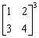
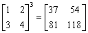
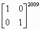
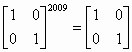
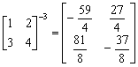

二階矩陣的冪(III)
程式由網友roviury提供。
程式更新日期: 2012年1月20日
程式可以計算一個2×2矩陣的冪。 這個程式的速度比第(I)及(II)版快，特別是計算較大數冪時，速度明顯快很多。冪亦可以是正數、負數(包括逆矩陣)及小數。
程式需要在 CMPLX 模式下執行，因此在選擇新程式位置後，按 2 選用CMPLX模式。
程式 (168 bytes)
?→A: ?→B: ?→C: ?→D:
AD - BC→Y: . 5(A+D:
Ans + √( Ans2 - Y)cos(πr(Ans<0→M:
?→X: If Abs(Ans: Then Y÷M2→Y:
A÷M→A: B÷M→B: C÷M→C: D÷M→D:
Abs(M)^(X)∠(Xarg(M→M: IfEnd: X:
If
Y≠1: Then Abs( Y => Ans^(X)∠(X arg( Y: (1-Y)-1(
1-Ans: IfEnd:
MAnsM- →Y: AY + M→A◢ BY→B◢
CY→C◢ DY + M→D
註1: 如想計算逆矩陣，只要輸入負冪數即可。
註2: 如果將紅色的 : 改為◢ 可以顯示出 alpha 及beta 值。
例題1: 計算

按 Prog 1 再按 1 EXE 2 EXE 3 EXE 4 EXE 3 EXE (顯示37)
EXE (顯示54) EXE (顯示81) EXE (顯示118)
所以

例題2: 計算

按 Prog 1 再按 1 EXE 0 EXE 0 EXE 1EXE 2009 EXE (顯示1)
EXE (顯示0) EXE (顯示0) EXE (顯示1)
所以

例題3: 計算以下矩陣的逆矩陣:
按 Prog 1 再按 1 EXE 2 EXE 3 EXE 4 EXE - 3 EXE (顯示 - 14.75)
SHIFT d/c (顯示 -59/4) EXE (顯示 6.75) SHIFT d/c (顯示 27/4)
EXE (顯示 10.125) SHIFT d/c (顯示 81/8)
EXE (顯示 -4.625) SHIFT d/c (顯示 -37/8)
註: 若不用顯示假分數，可以省略不按 SHIFT d/c。
所以

返回 CASIO fx-50FH、fx-3650P II、fx-50FH II及fx-50F PLUS 程式集